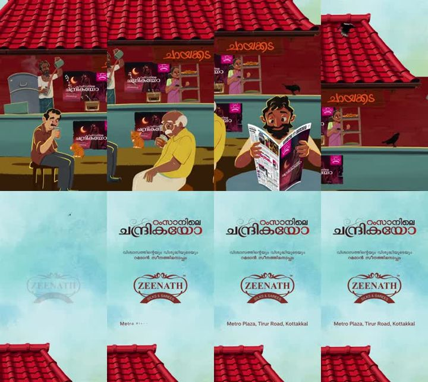

What I learned from your nine Pinterest references, rebuilt from scratch as a new character rig, a style guide and four animated mockups. Nothing here touches the live 2D videos. Tell me what is wrong and I will fix the rules before anything goes into production.
Mockup 1 · Golden hour run (from refs 8 and 9). Five painted depth layers scroll at different speeds, the sun sits behind him so he gets a warm rim on his back edges, dust kicks up on each step, grass sways in front of the lens.
The look in one paragraph
Six of the nine references (4 to 9) share one look: a Disney-style 2D cartoon set in an Indian village, with natural body proportions, warm brown skin, big expressive eyes under thick brows, and painted backgrounds that carry the mood. Every shot has one strong, visible light source (sun, window, fire, doorway) and the characters are lit by that same light: a lit side, a shadow side tinted by the room, and a thin bright rim. Lines are thin and warm brown, never black. The animation is quiet and alive: breathing, blinking, eyes leading the head, smoke, dust and leaves always moving, and a slow camera push. References 1 to 3 are different styles; I took techniques from them, not the look.
What I took from each reference

Ref 1 · technique
Kerala tea shop, vertical ad. Several small everyday actions in one shot (pouring tea, reading the paper, a cat) and a slow vertical pan through layers.
Market "Life" piece. Match cuts and liquid wipes between scenes, a character flying through the frame. Colours are too neon for history, the transitions are not.
Same father in warm morning light. Very small acting: eyes drop, lids get heavy, the head sinks. Proof that slow is fine if something is always moving.
A new cast built for this look, with its own rig. It keeps the rule from the current 2D rig: knees bend forward only, elbows bend back only, and every joint bends in a soft curve, never a corner.
Front view. The main cast facing the camera: detailed four-finger hands and a proper nose in every view.Cast lineup. Dashed lines are one head tall. All five breathe, shift weight and blink on their own timing, so a crowd never blinks together.
Character
Heads tall
Build
Look
Raju, village boy, 10
4.5
Short legs, round head, big eyes
Curly mop, cream kurta, rolled blue pants, barefoot
Arjun, young man, 20
6.0
Long legs, slim
Neat side-swept hair, white shirt, jeans, leather satchel
Lakshmi, mother, 40
5.8
Soft shoulders, long kurta
Maroon dupatta with gold edge over the head, earrings, bangles
Gopal, father, 45
6.0
Broad, heavier jaw
Thick moustache, swept hair, white shirt and mundu
Dada, grandfather, 75
5.7
Stooped 8 degrees
White side hair, beard, round glasses, beige kurta
Faces
Expression sheet. The brows do most of the acting. Worry lifts the inner ends, anger drops them, joy squeezes the lower lids up.
Default view is three-quarter. The far eye is narrower and sits close to the profile line.
Eyes are large almonds: brown iris, one big highlight and one small bounce highlight, a heavy upper lid line with a small flick at the outer corner.
Brows are thick, dark, tapered strokes.
The nose is prominent and rounded, with a nostril. Smaller for women and children.
The mouth is a small curve with a shaded lower lip. Laugh lines, forehead lines and jowls mark age.
Warm blush on the cheek and nose. Hair throws a soft shadow on the forehead.
Style guide
Light and shading recipe
Five passes for every part (head, hair, arm, shirt, pot). The light swings left and right so you can see the shadow crescent and the rim follow it. This is how shadows stay dynamic in every scene.
Three tones per shape: lit tone, a shadow crescent on the side away from the light, a thin bright rim on the side facing it.
Shadows take the room's colour: blue at night, teal in a firelit hut, warm brown at golden hour. Never grey.
Soft edge on faces, hard edge on clothes and props.
Line: thin, a darker version of the fill colour, about 2 px at 1080p. Never pure black.
Character and background share one light. If the window is on the right, the rim is on the right of every face.
Contact shadows under every foot and object, so nothing floats.
Backgrounds
Painted in 4 to 6 depth layers: sky, far hills, middle (huts, palms), ground, foreground framing.
Air haze: the further a layer is, the lighter and closer to the sky colour it gets.
Texture from many soft brush dabs and strokes (straw, wood grain, plaster), never flat fills.
The light source is in the shot or clearly implied, with god rays and floating dust in it.
Dark, slightly blurred foreground leaves or objects frame the bottom corners.
Characters stand on the ground plane with a contact shadow and never cross a prop.
Colour moods
Golden hour
Mint sky to honey haze. Warm brown shadows, cream rim.
Moonlit room
Blue-green room, one small warm lamp as the accent.
Firelight hut
Teal walls against orange flame. Light flickers on faces.
Doorway
Dark teal interior, warm light spilling from one side.
Skin
Three warm browns, each with its own shadow and rim.
Animation guide
Run cycle. Contact, down, passing and up. The body bobs twice per cycle and leans 9 degrees into the run. Arms swing against the legs.
Motion
Timing
Rule
Breathing
every 3–5 s
Chest, shoulders and blanket rise. Never stops, even in a hold.
Blink
every 3–4 s, 5 frames
Each character on its own timer. Blink on a head turn to sell it.
Eyes lead
head follows 6–10 frames later
Eyes dart first, then the head turns, then the brows settle.
Run
0.9–1.5 cycles/s
Bob at double frequency, dust on each foot strike, hair and paper trail behind.
Camera
3–5% push per shot
Slow push-in or a sideways track. Layers move at about 0.05, 0.3, 1 and 1.5 times the ground speed.
Ambient
always on
Smoke, dust, leaves, fire flicker, birds. Something moves in every frame.
Follow-through
2–4 frames behind
Dupatta edge, earrings, hair curls, paper corners swing after the body stops.
Mockups
Mockup 2 · Moonlit room (ref 4). He stares up, his eyes dart to the window, the head follows, the brows knit, he closes his eyes and breathes out. Leaf shadows sway in the window light and dust drifts through the beam.Mockup 3 · Firelight hut (refs 7 and 3). The flame drives everything: wall glow, the warm rim on his face, and a giant shadow on the back wall that flickers with it. Steam curls up from the pot. At 5 seconds he looks up and smiles.Mockup 4 · Close-up acting (ref 6). Worry, eyes fill with tears, she squeezes them shut and a tear runs, she breathes, then looks up into the light with a small smile.
What to do, what not to do
Each rule has a code so you can correct it in one line, for example "X4 is fine, drop it" or "D7 needs more".
Do
D1
Give every shot one visible light source and light the characters with it.
D2
Tint shadows with the room's colour (blue, teal, warm brown).
D3
Add a thin rim on the side facing the light, on faces, hair and clothes.
D4
Paint backgrounds in depth layers with haze, brush texture and dust in the light.
D5
Keep something moving in every frame: breath, blinks, smoke, leaves, fire.
D6
Let the eyes lead, then the head, then the brows.
D7
Use natural proportions: about 4.5 heads for children, about 6 for adults.
D8
Bend knees forward and elbows back, always as a soft curve.
D9
Put a contact shadow under every foot and prop.
D10
Use cast shadows to tell part of the story (ref 3).
Don't
X1
Pure black outlines or thick cartoon strokes.
X2
Grey shadows or one flat colour with no light direction.
X3
Flat backgrounds, or a background lit from a different side than the character.
X4
Neon pink and purple palettes like ref 2 for history stories.
X5
Frozen holds where nothing moves.
X6
Joints that bend backwards or bend at a sharp corner.
X7
Characters floating, sliding or passing through props.
X8
Chibi heads or toy-like bodies; this look is closer to real people.
X9
Everyone blinking or breathing in sync.
X10
Fast, jerky camera moves; this look is calm.
Help me learn
Reply in the thread with whatever is off. Short notes are perfect ("nose smaller", "D5 yes", "mother's dupatta wrong"). These are the questions that would teach me the most:
Is refs 4 to 9 the look you want, with refs 1 to 3 only lending techniques (layers, transitions, shadow stories)?
Should this become a fourth 2D style next to Leo, Gumball and Alium, for example for stories set in India or in villages?
Faces: are the eyes, brows and nose the right size and shape? Should the nose be smaller?
Lines: keep the thin brown outline, or go almost lineless like parts of ref 8?
The references look like AI image-to-video. My mockups are drawn by code with a rig, which keeps characters consistent but is less painterly. Do you want me to also test the AI keyframe route side by side? That spends generation credits, so I will wait for your yes.